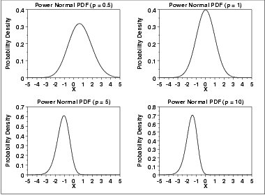
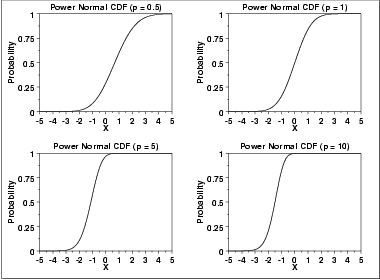
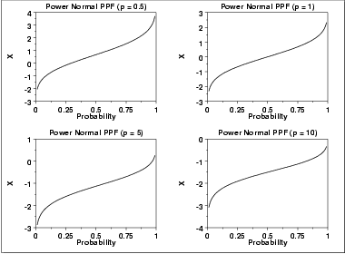
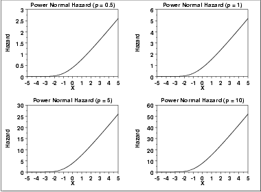
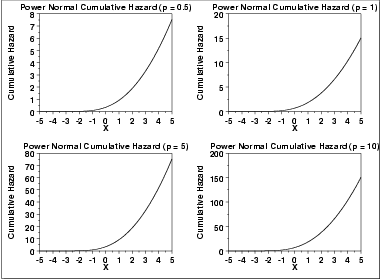
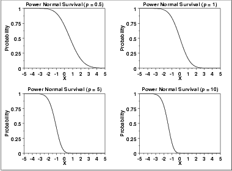
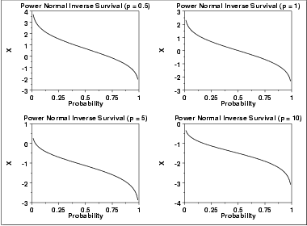

|
1.
Exploratory Data Analysis
1.3. EDA Techniques 1.3.6. Probability Distributions 1.3.6.6. Gallery of Distributions
|
|||
| Probability Density Function |
The formula for the probability density
function of the standard form of the power normal distribution is
\( f(x;p) = p \phi(x) (\Phi(-x))^{p-1} \hspace{.3in} x, p > 0 \) where p is the shape parameter (also referred to as the power parameter), \(\Phi\) is the cumulative distribution function of the standard normal distribution, and \(\phi\) is the probability density function of the standard normal distribution. As with other probability distributions, the power normal distribution can be transformed with a location parameter, μ, and a scale parameter, σ. We omit the equation for the general form of the power normal distribution. Since the general form of probability functions can be expressed in terms of the standard distribution, all subsequent formulas in this section are given for the standard form of the function. The following is the plot of the power normal probability density function with four values of p.  |
||
| Cumulative Distribution Function |
The formula for the cumulative distribution
function of the power normal distribution is
\( F(x;p) = 1 - (\Phi(-x))^{p} \hspace{.3in} x, p > 0 \) where \(\Phi\) is the cumulative distribution function of the standard normal distribution. The following is the plot of the power normal cumulative distribution function with the same values of p as the pdf plots above.  |
||
| Percent Point Function |
The formula for the percent point
function of the power normal distribution is
\( G(f) = \Phi^{-1}(1 - (1 - f)^{1/p}) \hspace{.3in} 0 < f < 1; p > 0 \) where \(\phi^{-1}\) is the percent point function of the standard normal distribution. The following is the plot of the power normal percent point function with the same values of p as the pdf plots above.  |
||
| Hazard Function |
The formula for the hazard
function of the power normal distribution is
\( h(x;p) = \frac{p\phi(x)} {\Phi(-x)} \hspace{.3in} x, p > 0 \) The following is the plot of the power normal hazard function with the same values of p as the pdf plots above.  |
||
| Cumulative Hazard Function |
The formula for the cumulative hazard
function of the power normal distribution is
\( H(x,p) = -\log{((\Phi(-x))^{p})} \hspace{.3in} x, p > 0 \) The following is the plot of the power normal cumulative hazard function with the same values of p as the pdf plots above.  |
||
| Survival Function |
The formula for the survival
function of the power normal distribution is
\( S(x;p) = (\Phi(-x))^{p} \hspace{.3in} x, p > 0 \) The following is the plot of the power normal survival function with the same values of p as the pdf plots above.  |
||
| Inverse Survival Function |
The formula for the inverse
survival function of the power normal distribution is
\( Z(f) = \Phi^{-1}(1 - f^{1/p}) \hspace{.3in} 0 < f < 1; p > 0 \) The following is the plot of the power normal inverse survival function with the same values of p as the pdf plots above.  |
||
| Common Statistics | The statistics for the power normal distribution are complicated and require tables. Nelson discusses the mean, median, mode, and standard deviation of the power normal distribution and provides references to the appropriate tables. | ||
| Software | Most general purpose statistical software programs do not support the probability functions for the power normal distribution. | ||